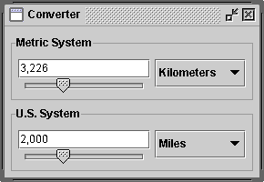

Feedback Form
|
|
Start of Tutorial > Start of Trail > Start of Lesson |
Search
Feedback Form |
TheJPanelclass provides general-purpose containers for lightweight components. By default, panels don't paint anything except for their background; however, you can easily add borders to them and otherwise customize their painting. Details are in Performing Custom Painting
.
In many look and feels (but not GTK+), panels are opaque by default. Opaque panels work well as content panes and can help painting efficiency, as described in Using Top-Level Containers
setOpaque. A transparent panel draws no background, so that any components underneath show through.
The following picture shows a garishly colorized version of the Converter application, which is discussed in more detail in Using Models.
Converter uses panels in several ways: Here is what Converter normally looks like:
- One
JPanelinstance — colored red in the preceding snapshot — serves as a content pane for the application's frame. This content pane uses a top-to-bottomBoxLayout- Two instances of a custom
JPanelsubclass namedConversionPanel— colored cyan — are used to both contain components and coordinate communication between components. The panels also have titled borders, which describe their contents and paint a line around them. Each panel uses a left-to-rightBoxLayoutobject to lay out its contents.- In each
ConversionPanel, aJPanelinstance — colored magenta — is used to make a combo box be at the right size and position. Each panel uses a top-to-bottomBoxLayoutobject (helped by an invisible space-filling component) to lay out the combo box.- In each
ConversionPanel, an instance of an unnamedJPanelsubclass — colored blue — groups two components (a text field and a slider) and restricts their size. Each panel uses a top-to-bottomBoxLayoutobject to lay out its contents. As Converter demonstrates, panels are useful for grouping components, simplifying component layout, and putting borders around groups of components. The rest of this section gives hints on grouping and laying out components. For information about using borders, see How to Use Borders
Like other containers, a panel uses a layout manager to position and size its components. By default, a panel's layout manager is an instance ofFlowLayoutsetLayoutmethod or specifying a layout manager when creating the panel. The latter approach is preferable for performance reasons, since it avoids the unnecessary creation of aFlowLayoutobject.Here is an example of setting the layout manager when creating the panel:
JPanel p = new JPanel(new BorderLayout()); //PREFERRED!This approach doesn't work with
BoxLayout, since theBoxLayoutconstructor requires a pre-existing container. Here is an example that usesBoxLayout:JPanel p = new JPanel(); p.setLayout(new BoxLayout(p, BoxLayout.PAGE_AXIS));
When you add components to a panel, you use theaddmethod. Exactly which arguments you specify to theaddmethod depend on which layout manager the panel uses. When the layout manager isFlowLayout,BoxLayout,GridLayout, orSpringLayout, you'll typically use the one-argumentaddmethod, like this:When the layout manager isaFlowPanel.add(aComponent); aFlowPanel.add(anotherComponent);BorderLayout, you need to provide an argument specifying the added component's position within the panel. For example:WithaBorderPanel.add(aComponent, BorderLayout.CENTER); aBorderPanel.add(anotherComponent, BorderLayout.PAGE_END);GridBagLayoutyou can use eitheraddmethod, but you must somehow specify grid bag constraintsFor information about choosing and using the standard layout managers, see Using Layout Managers
The API in theJPanelclass itself is minimal. The methods you are most likely to invoke on aJPanelobject are those it inherits from its superclasses —JComponentContainerComponentJComponents can use, see The JComponent Class.
Creating a JPanelConstructor Purpose JPanel()
JPanel(LayoutManager)Create a panel. The LayoutManagerparameter provides a layout manager for the new panel. By default, a panel uses aFlowLayoutto lay out its components.
Managing a Container's Components Method Purpose void add(Component)
void add(Component, int)
void add(Component, Object)
void add(Component, Object, int)
void add(String, Component)Add the specified component to the panel. When present, the intparameter is the index of the component within the container. By default, the first component added is at index 0, the second is at index 1, and so on. TheObjectparameter is layout manager dependent and typically provides information to the layout manager regarding positioning and other layout constraints for the added component. TheStringparameter is similar to theObjectparameter.int getComponentCount()Get the number of components in this panel. Component getComponent(int)
Component getComponentAt(int, int)
Component getComponentAt(Point)
Component[] getComponents()Get the specified component or components. You can get a component based on its index or x, y position. void remove(Component)
void remove(int)
void removeAll()Remove the specified component(s).
Setting/Getting the Layout Manager Method Purpose void setLayout(LayoutManager)
LayoutManager getLayout()Set or get the layout manager for this panel. The layout manager is responsible for positioning the panel's components within the panel's bounds according to some philosophy.
Many examples contained in this lesson useJPanelobjects. The following table lists a few.
Example Where Described Notes ConverterThis section Uses five panels, four of which use BoxLayoutand one of which usesGridLayout. The panels use borders and, as necessary, size and alignment hints to affect layout.ListDemoHow to Use Lists Uses a panel, with its default FlowLayoutmanager, to center three components in a row.ToolBarDemoHow to Use Toolbar Uses a panel as a content pane. The panel contains three components, laid out by BorderLayout.BorderDemoHow to Use Borders Contains many panels that have various kinds of borders. Several panels use BoxLayout.BoxLayoutDemoHow to Use BoxLayout Illustrates the use of a panel with Swing's BoxLayoutmanager.
|
|
Start of Tutorial > Start of Trail > Start of Lesson |
Search
Feedback Form |
Copyright 1995-2004 Sun Microsystems, Inc. All rights reserved.